18 Ent1
19 Protein Overview
The mouse protein Ent1 (ENT1) is encoded by the gene Ent1, which stands for “equilibrative nucleoside transporter 1.” It is also known by several aliases, including Ent1 and Slc29a1. ENT1 is involved in the transport of nucleosides across cell membranes, playing a crucial role in nucleoside homeostasis and cellular signaling.
20 Data Overview
The protein data can be handled either with RINT normalization or a Box-Cox (BC) transformation. BC transformation often produces clearer genome scans, but is not available yet for every analysis stage below.
20.1 Protein Distributions
20.1.1 Box-Cox transformation diagnostic
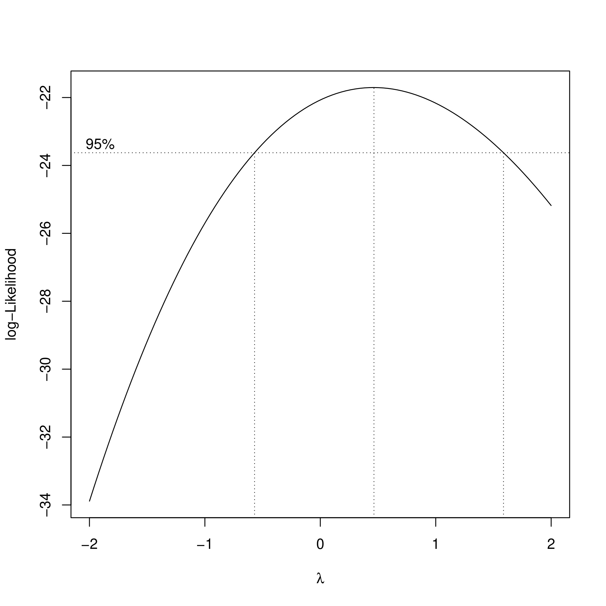
20.1.2 Raw data
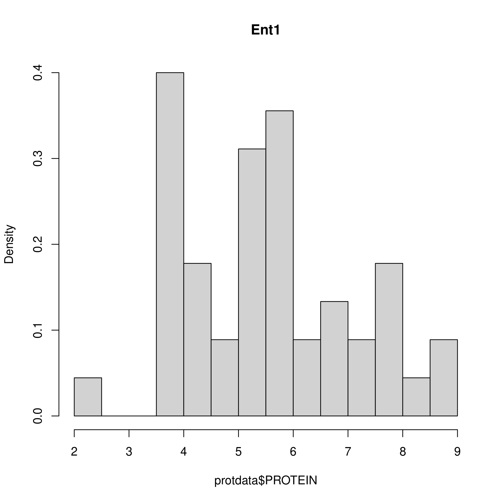
20.1.3 Box-Cox transformed
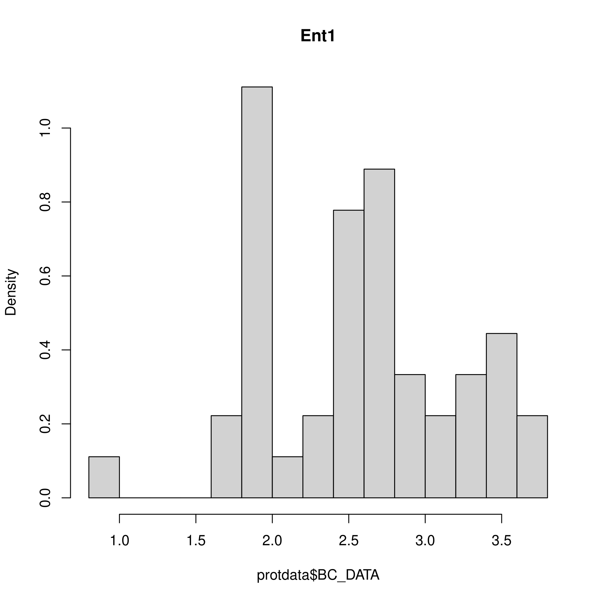
20.1.4 RINT transformed
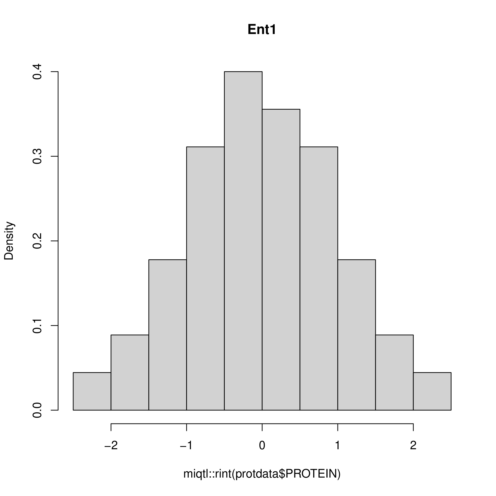
20.2 Heritability
Estimated narrow-sense heritability, i.e. whether the trait is strongly correlated within Collaborative Cross strains.
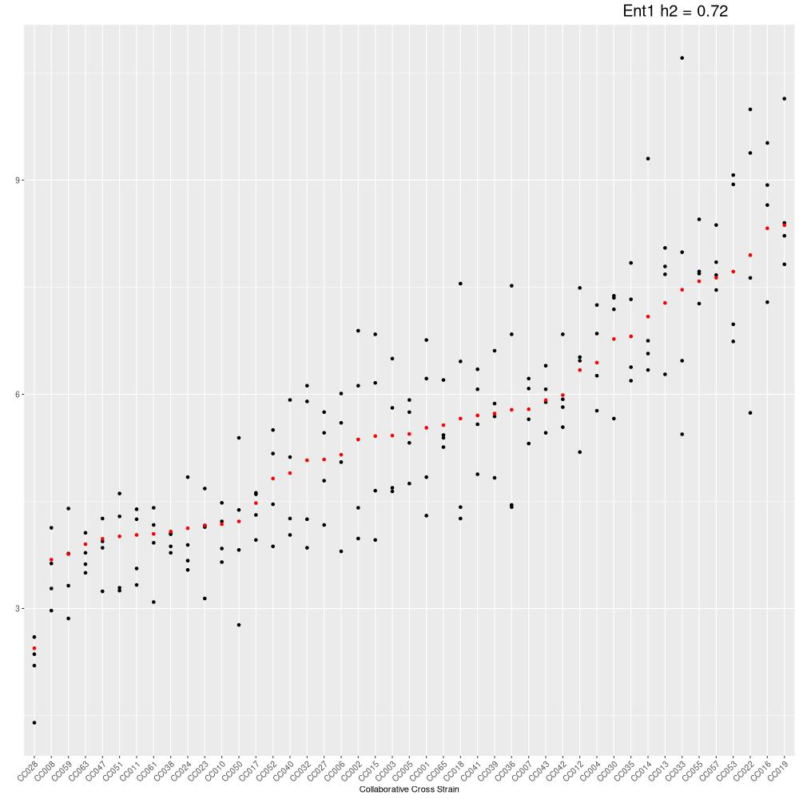
20.3 pQTL Genome Scans
20.3.1 Combined with RNA (eQTL + pQTL)
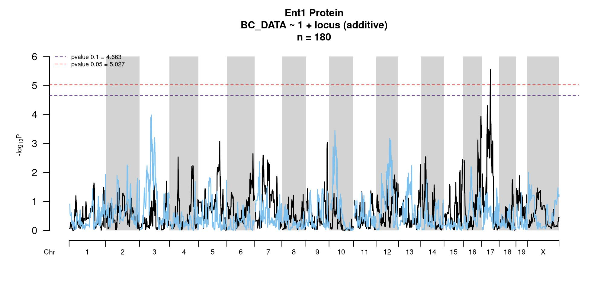
20.3.2 Genome-wide scan (scans_0.95, box-cox)
Opens on Chr 17, where the significant peak is.
20.4 Peak Locus
20.4.1 Confidence interval of the significant peak (if one exists)
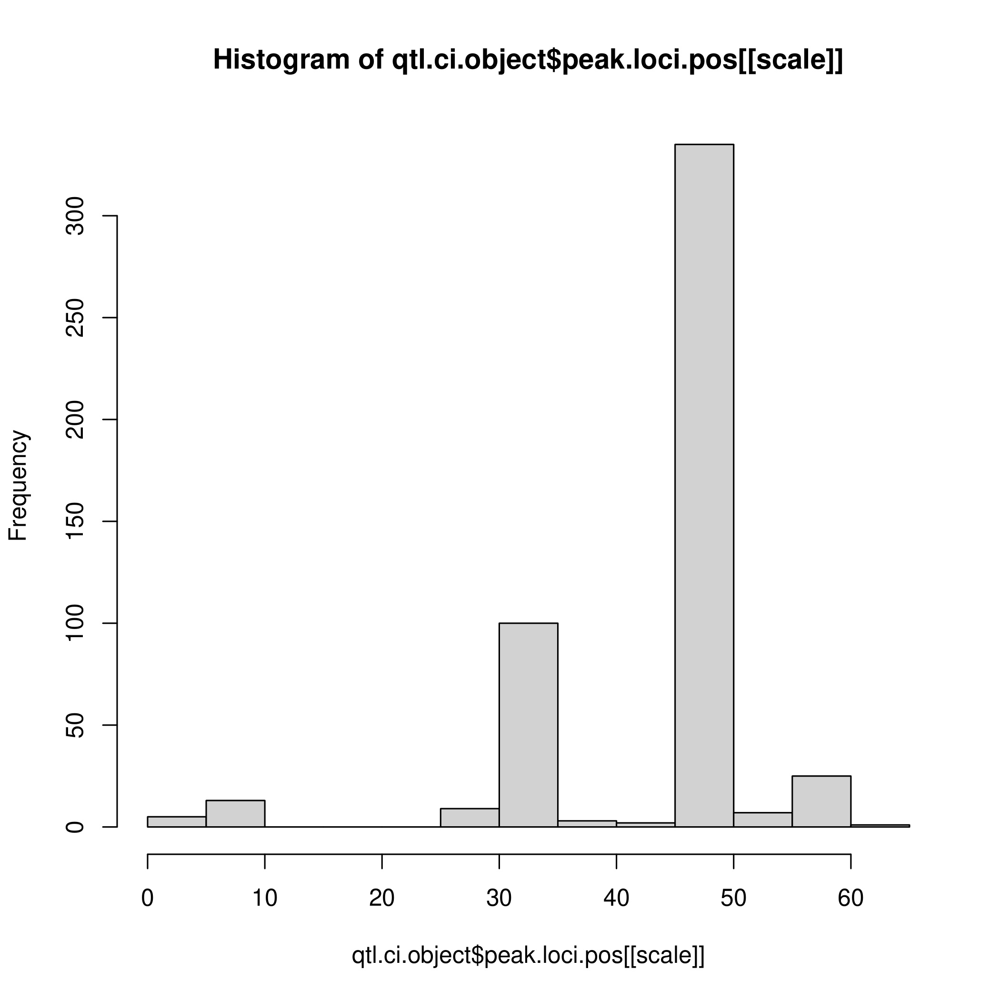
20.5 RNA Mediation
Genome-wide test of whether transcript abundance mediates the protein QTL (bmediatR).
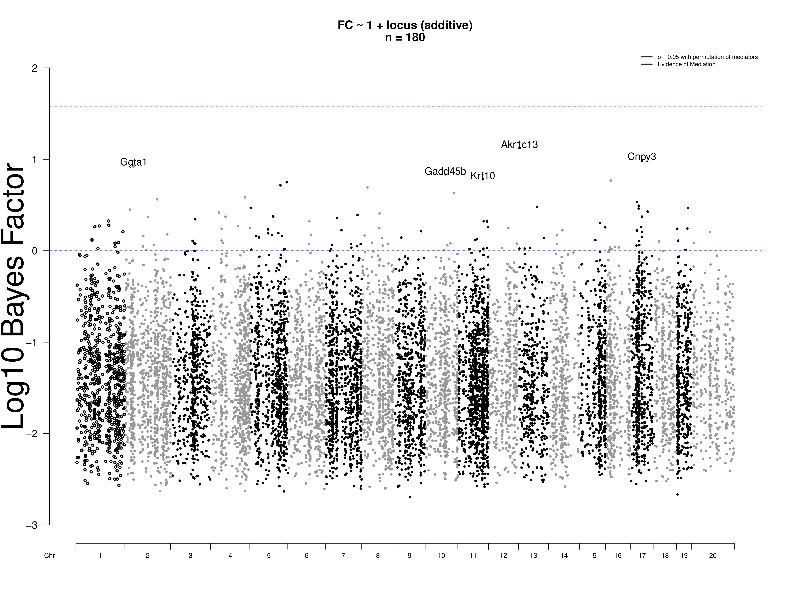
20.5.1 Protein-protein mediation at the peak locus
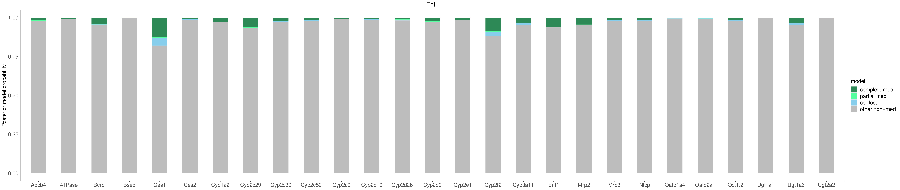
20.6 TIMBR (Allelic Series)
TIMBR infers whether founder haplotypes at a QTL collapse into fewer functional alleles, using a Chinese Restaurant Process prior over haplotype groupings.
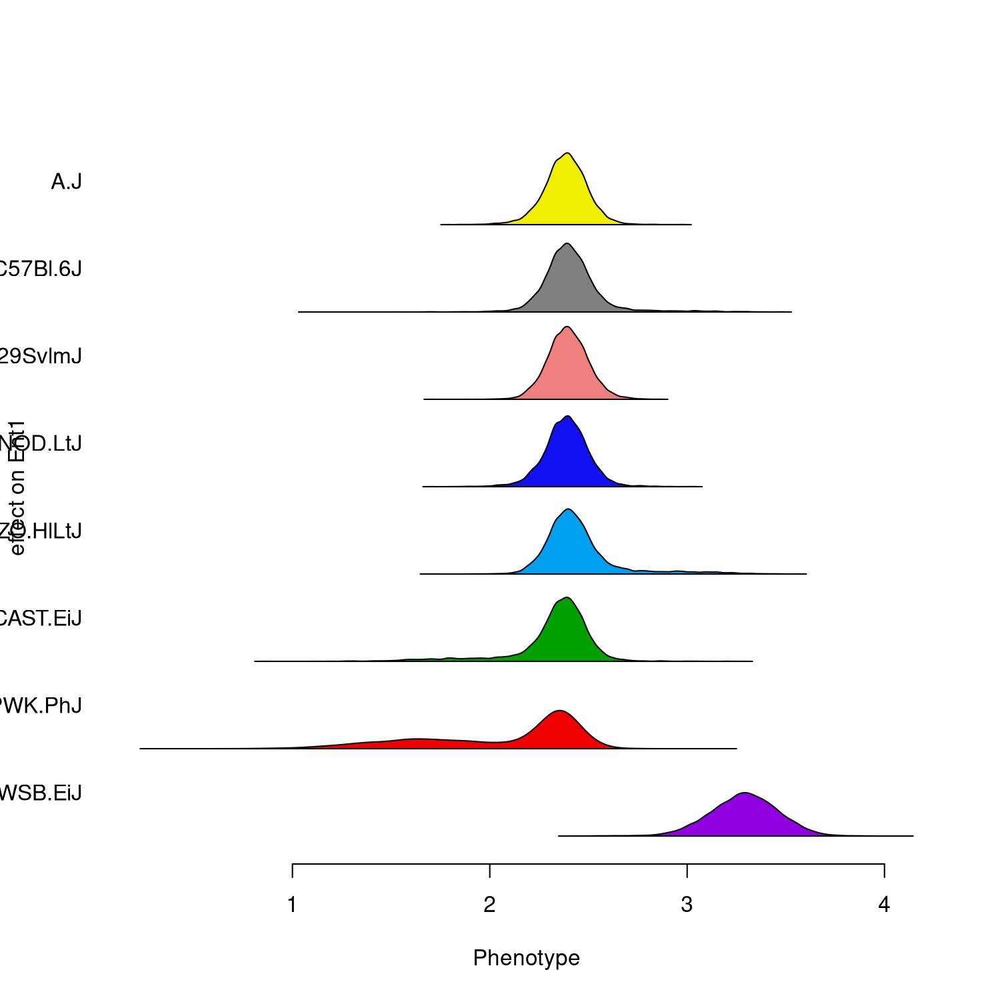
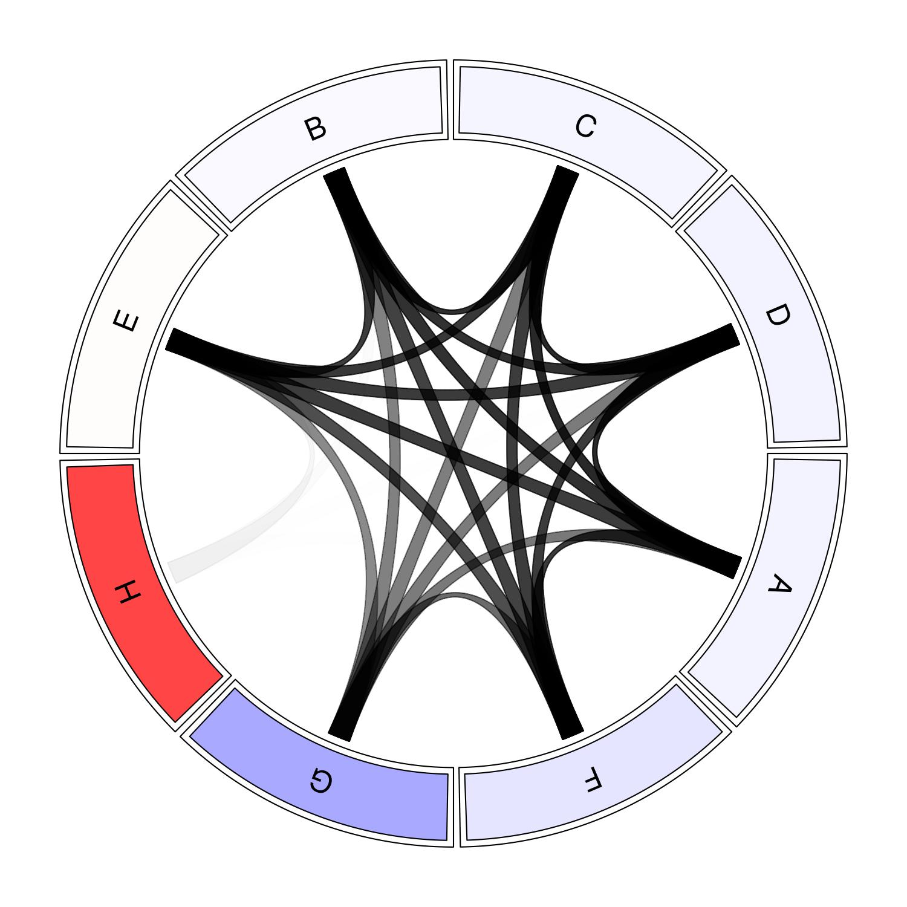
Haplotype effects and circos plot swept across the bootstrap confidence interval (5’ to 3’ along the chromosome):
20.6.0.1 CI-window model-selection dot plot
20.7 Merge / Diplotype Fine-Mapping
Not yet analyzed here: merge/diplotype fine-mapping has not been run for Ent1. See Analysis Status.